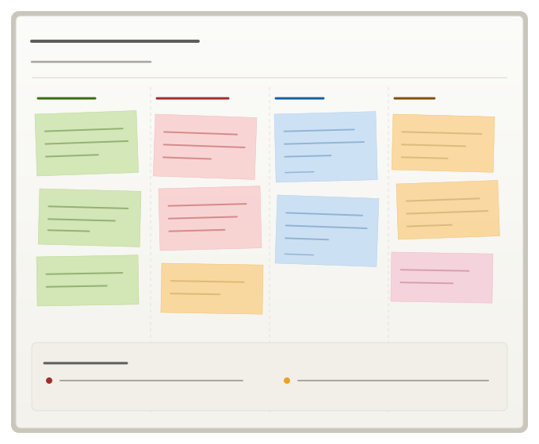

Refonte de l'onboarding d'une plateforme SaaS B2B pour clarifier la promesse produit.
Conception d'une web app qui guide les recruteurs pour évaluer les babysitters plus vite et plus justement.
Refonte d'un espace privé pour le rendre plus intuitif, mobile-first et cohérent avec l'évolution des services.

De l'organisation à l'analyse des retours : tests utilisateurs pour valider la cohérence d'un outil SaaS en pleine évolution.
Conception d'un CRM grâce à l'IA pour simplifier le travail des éducateurs canins indépendants.
Elodie comprend les contraintes front et adapte ses designs en conséquence, ce qui évite beaucoup d'allers-retours.
Le travail d'Elodie nous a permis de mieux comprendre les besoins en alignement aux objectifs stratégiques de l'entreprise.
J'ai travaillé avec Elodie et j'ai apprécié sa façon de prendre en compte les remontées terrain pour les traduire en décisions design concrètes.
Je suis devenue Product Designer parce que ce métier transforme les frictions du quotidien en opportunités. Là où d'autres voient un problème, je vois une réponse à imaginer et un bénéfice concret à créer pour l'utilisateur.
Ma double formation en Product Design et Stratégie Digitale, adossée à mon parcours en Sciences Humaines et Sociales, me donne une perspective particulière sur les projets centrés utilisateur : je m'intéresse autant aux comportements et aux besoins qu'à la solution elle-même.
J'ai aussi une sensibilité forte pour les causes environnementales et animales, et mon ambition est d'aligner progressivement ma carrière sur ces engagements.